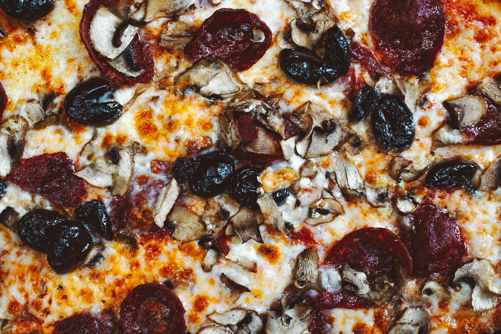

Cheese grits with mushrooms is a savory, comforting dish that pairs the creamy, corn-based staple of Southern cuisine with the deep, earthy umami of sautéed or roasted mushrooms.
Often served as a vegetarian alternative to "shrimp and grits, " it functions as a versatile meal for breakfast, brunch, or a hearty dinner side.